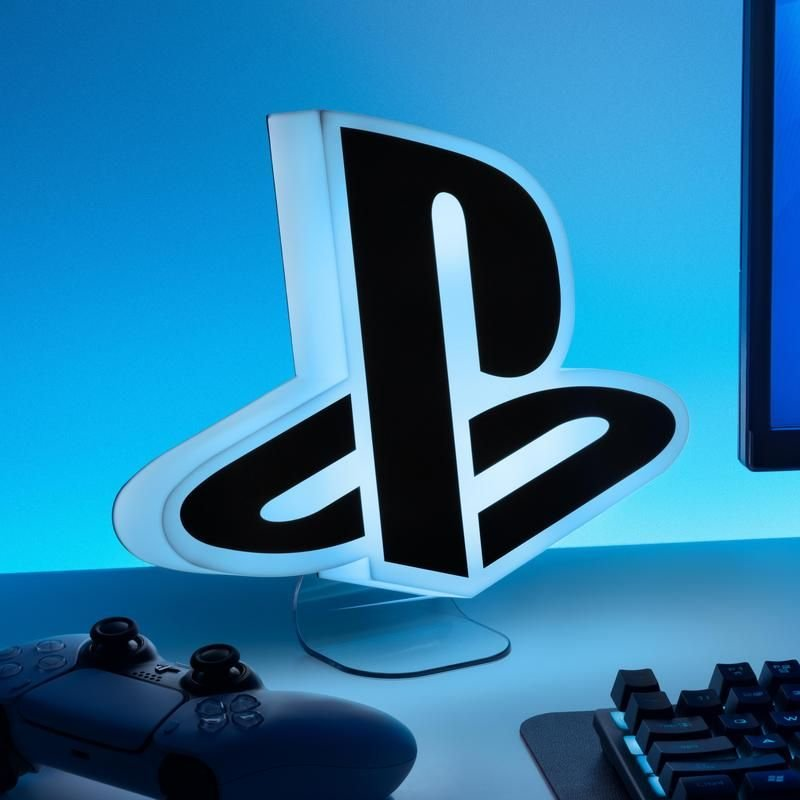

La marca se introdujo por primera vez el 28 de febrero de 1990 en Japón y ha desarrollado y publicado cinco videoconsolas de sobremesa, que incluyen un centro de medios de comunicación y un servicio en línea, posteriormente se introdujeron revistas y computadoras. La primera consola de la serie fue PlayStation, que también fue la primera en vender 100 millones de unidades. Su sucesora, PlayStation 2, es la segunda consola de la serie, y la más vendida de la historia hasta la fecha, alcanzando más de 155 millones de unidades vendidas, llegando a estar en el mercado por 13 años.PlayStation 3, ha vendido más de 87 millones de consolas en todo el mundo, después le sigue PlayStation 4 lanzada en 2013 y 2014 con 118 millones de unidades vendidas como la tercera consola en superar dicho formato. Y la más reciente consola de Sony, PlayStation 5, lanzada en noviembre de 2020, ha llegado a las 10,1 millones de unidades. La primera consola portátil de la marca fue PocketStation, que se lanzó en Japón en 1999, aunque se pretendía lanzar en el resto del mundo, pero debido a sus bajas ventas la consola solo llegó a Japón, y fue descontinuada en 2002 por Sony. Aunque la consola logró llegar a algunas partes fuera de Japón, como Sudamérica y algunos lugares de Europa. Su segunda videoconsola portátil fue PlayStation Portable (PSP) que hasta 2014 logró vender 80 millones de unidades, haciendo que Sony volviera al mercado portátil luego de que no les fue muy bien con PocketStation. Su sucesor fue llamado PlayStation Vita siendo la tercera y última portátil de Sony, que vendió 16 millones de unidades a 2018, pero la consola fue descontinuada en 2019 a nivel mundial debido a sus bajas ventas.6 Otro hardware lanzado como parte de la serie de PlayStation incluye la PSX, un grabador de vídeo digital que se integró en la PlayStation y PlayStation 2, aunque duró poco debido a su alto precio y nunca fue lanzado fuera de Japón, así como una Sony Bravia televisión que cuenta con un sistema integrado de PlayStation 2. La serie principal de los controladores utilizados por las series PlayStation es el DualShock, una línea de joysticks de vibración-feedback con gamepad que llegaron a los 28 millones de unidades vendidas al 28 de junio de 2008.
